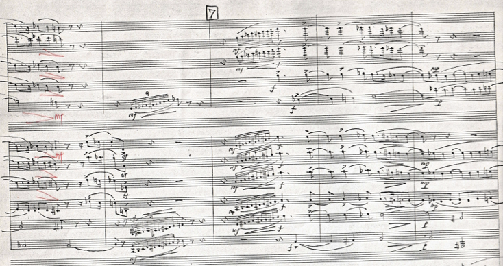

<section class="work-detail">

  <p class="breadcrumb">
    <a href="../works.html">Works</a> /
    <a href="../works_wind.html">吹奏楽作品</a>
  </p>

  <div class="work-hero">
    <figure class="work-cover">
      
    </figure>

    <div class="work-info">
      <h1>シンフォニック・バンドのための『パッサカリア』</h1>
      <small class="sub">Wind Band Work</small>

      <dl class="work-meta">
        <dt>編成</dt>
        <dd>吹奏楽</dd>

        <dt>作曲年</dt>
        <dd>確認中</dd>

        <dt>初演</dt>
        <dd>確認中</dd>

        <dt>委嘱元</dt>
        <dd>確認中</dd>
      </dl>

      <h2>概要</h2>
      <p>
        兼田敏の吹奏楽作品のひとつ。作品の概要、初演情報、出版情報などを順次掲載予定です。
      </p>
    </div>
  </div>

  <div class="work-extra">
    <section>
      <h2>楽譜情報</h2>
      <dl class="work-meta">
        <dt>出版社</dt>
        <dd>確認中</dd>

        <dt>価格</dt>
        <dd>確認中</dd>

        <dt>商品リンク</dt>
        <dd><a href="#">準備中</a></dd>
      </dl>
    </section>

    <section>
      <h2>関連リンク</h2>
      <ul>
        <li><a href="#">演奏動画リンク準備中</a></li>
      </ul>
    </section>
  </div>

</section>
